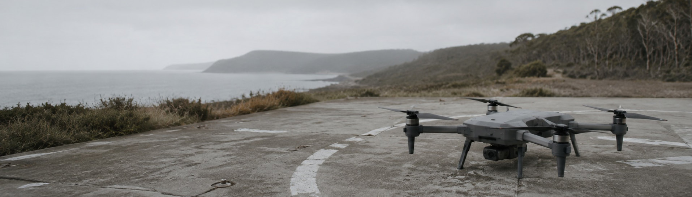

Mission-to-machine for autonomous mobile machines.
A validation and coordination layer for teams building drones, ground robots, and autonomous watercraft. It keeps the whole machine aligned as the design evolves.
Most robotics projects don't fail because the engineers aren't smart.
They fail because the machines are deeply interconnected. One engineer changes a motor, a battery, a sensor, or a payload, and suddenly the thermal limits, power budget, firmware behaviour, or compliance assumptions are no longer valid.
- Thermal limits
- Autonomy envelope
- Perception sync
- Power budget
Most teams only discover those conflicts during integration, testing, certification, or deployment, when fixes are slow, expensive, and often force major redesigns.
Sture is built to prevent that.
Sture creates the first complete draft of the machine including architecture, electronics, firmware scaffolding, mechanical systems, autonomy and perception stack, simulation, and compliance traceability, then stays involved as the design evolves.
What that gives a team
-
01Conflicts caught at design time.
Sture flags integration failures before they happen, when changes still cost hours instead of months.
-
02The whole machine stays aligned.
When one engineer changes a component, Sture propagates the impact across the whole machine: autonomy and perception, safety envelopes, firmware, electronics, mechanical, manufacturing, and compliance. Nothing falls through the cracks.
-
03Institutional knowledge compounds.
Every validated design teaches Sture. Lessons don't disappear into documents, disconnected tools, or employee turnover. The next machine is faster to design and less likely to repeat old mistakes.
The architecture is deliberate.
Interprets the mission. Drafts the spec.
Validates artifacts. Solves constraints. Generates the machine.
Reviews outputs. Challenges evidence. Extracts rules.
LLMs interpret and explain. A deterministic rules and traceability engine validates everything that becomes mission state.
The engine is what makes Sture different. It's where the overwhelming majority of our engineering effort has gone.
Contact us.
Sture works with autonomous-systems teams in Australia and across AUKUS-aligned programs. If engineering coordination is slowing your delivery from mission to deployed machine, we'd like to hear from you.